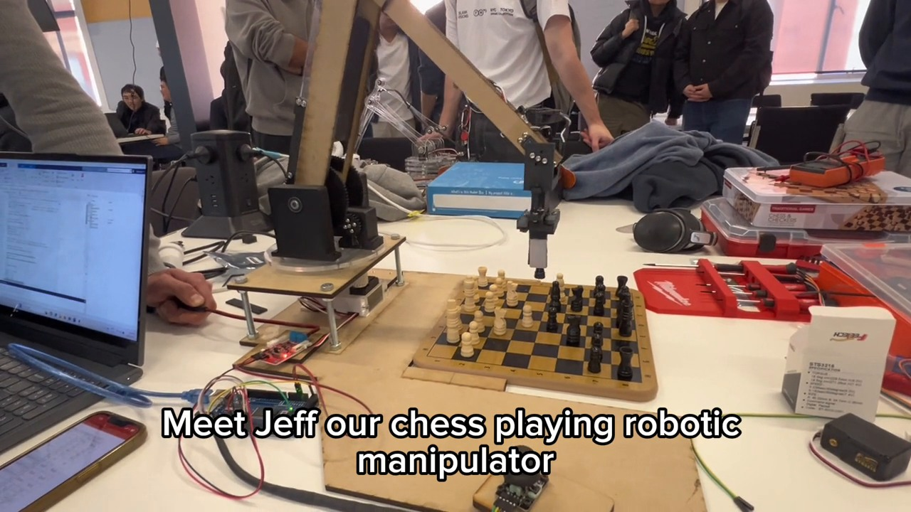

Project 03 / Robotic manipulation
Jeff, the Chess-Playing Robotic Arm
Making the next move: mechanical design and trajectory control for a robot that plays chess with people.
- My contribution
- Mechanical & trajectory-controller design lead
- Project type
- Robotics Systems class project
- Tools & focus
- MATLAB · Inverse kinematics · Task-space control

The idea
Turning a chess move into a physical action is a robotics problem. The arm needs a mechanical design that can reach the board and a controller that can translate a desired motion into coordinated joint movement.
Jeff was built as a four-degree-of-freedom robotic arm that plays chess against human opponents.
My contribution
I led the mechanical design and the trajectory-controller design for Jeff.
The MATLAB controller included an inverse-kinematics solver and a task-space velocity controller. I also made an educational video explaining the project and showing the robot in action.
Inside the system
- Mechanical design. The project used a four-degree-of-freedom robotic arm to interact with a physical chessboard.
- Inverse kinematics. An inverse-kinematics solver was implemented in MATLAB as part of the arm controller.
- Motion control. A task-space velocity controller formed part of the trajectory-control implementation.
- Communication. An educational demonstration video explained the robot and its operation.
Inverse kinematics
Relate the target pose to joint configuration.
Task-space velocity
Control the arm’s motion in task space.
Four-DOF arm
Carry out the movement at the chessboard.
Functional overview of the project’s main elements.
See it in motion.
Project footage / silent excerpt
A short, silent excerpt from the original project demonstration. Jeff, the four-degree-of-freedom arm, at the chessboard. Open video file ↗
Class result
Jeff won first place in the Robotics Systems class.